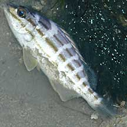
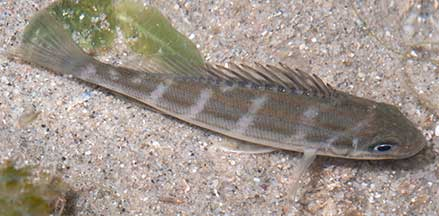
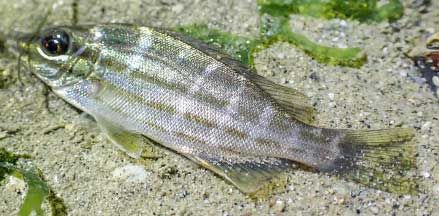
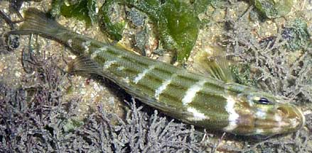

|
|
| fishes text index | photo index |
| Phylum Chordata > Subphylum Vertebrata > fishes > Family Terapontidae |
| Trumpeter
perch Pelates quadrilineatus Family Terapontidae updated Oct 2020 Where seen? This silvery fish with a dot-dash pattern is sometimes seen on our Northern shores among seagrasses. Features: About 8cm, up to 30cm. Adults have a silvery body with 4-6 dark horizontal lines, a black blotch behind the head and below the start of the dorsal fin and another in front of the dorsal fin. Tail fin pale or dusky without lines. Often seen in schools in brackish waters and estuaries. It croaks when taken out of water, thus its common name. Juveniles have 6-7 greyish vertical bars across the horizontal lines. |
 Chek Jawa, Apr 03 |
 Changi, Jul 08 |
| What does it eat? It eats small fishes and other invertebrates |
| Trumpeter perch on Singapore shores |
On wildsingapore
flickr
|
| Other sightings on Singapore shores |
 Changi Lost Coast, Jun 22 Photo shared by Vincent Choo on facebook. |
 Kusu Island, Sep 10 Photo shared by Loh Kok Sheng on his flickr. |
Links
|